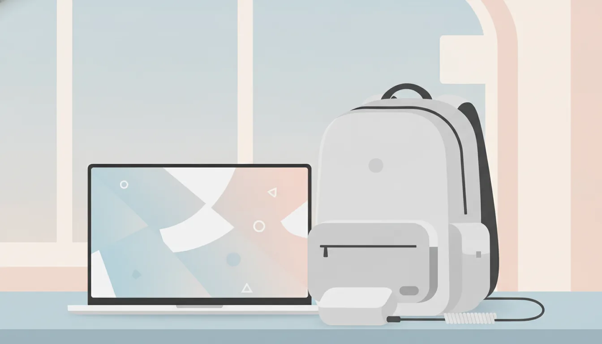

出張・遠征に最適な軽量ゲーミングノートPCの選び方
公開日: 2026-08-29
本ページのリンクには一部アフィリエイトリンクが含まれます(#PR)。
💼 なぜ「軽量」がゲーミングノートPC選びで重要なのか
eスポーツの大会や遠征、あるいは出張先での作業用にゲーミングノートPCを持ち歩く人が増えている。デスクトップ並みの性能を求めると、どうしても本体は重く分厚くなりがちだ。しかし移動が多い人にとっては、性能だけでなく「毎日持ち運べるかどうか」が実は一番の判断基準になる。
2kgを超えるモデルは一見誤差のようでも、リュックに入れて長時間歩くと肩への負担がじわじわ効いてくる。まずは自分の移動スタイルを振り返り、どこまでの重さなら許容できるかを決めておくと選びやすい。
⚖️ 重量とサイズのバランスをどう考えるか
軽量ゲーミングノートPCは、おおよそ1.5kg〜2.0kg台が一つの目安になる。1.5kg前後まで抑えられたモデルは13〜14インチ級が中心で、画面が小さくなる分、持ち運びやすさは高い。一方で15.6インチ級は画面の見やすさと性能のバランスが良く、遠征先でも作業や配信画面の確認がしやすい。
実際に選ぶ際は、数値上の重量だけでなく、ACアダプターの重さも忘れずにチェックしたい。本体が軽くても、アダプターが大きく重ければトータルの荷物は結局増えてしまう。
- 本体1.5kg以下+コンパクトアダプター:とにかく身軽に動きたい人向け
- 本体1.8kg前後:性能と携帯性のバランス重視派向け
- 本体2kg超:画面サイズや冷却性能を優先したい人向け
🔋 バッテリー持続時間と充電環境の注意点
出張や遠征では、電源が確保できない時間帯も少なくない。ゲーミングノートPCはグラフィック性能が高い分、一般的なビジネスノートよりバッテリー消費が早い傾向がある。カタログ上の駆動時間は「動画再生時」など軽い負荷での数値であることが多く、ゲームプレイ時はその半分以下になることも珍しくない。
移動中心の使い方なら、USB Type-C(PD規格)での充電に対応しているかも確認しておきたいポイントだ。モバイルバッテリーやホテルの電源タップと組み合わせやすく、荷物の選択肢が広がる。
🌡️ 冷却性能と静音性、遠征先での使いやすさ
薄型・軽量化を進めると、内部の排熱スペースはどうしても限られてくる。長時間の対戦や大会本番でパフォーマンスが落ちる「サーマルスロットリング」が起きやすいモデルもあるため、冷却設計は軽視できない部分だ。
会場やホテルの部屋など静かな環境で使う機会が多い人は、ファンの動作音にも目を向けておくといい。高負荷時にどの程度の音が出るかは、購入前にレビューや仕様の記載である程度把握できる。
🖱️ 周辺機器との組み合わせで携帯性を高める
本体が軽くても、外付けマウスやコントローラー、変換アダプターなどを大量に持ち歩けば結局荷物は重くなる。遠征用としては、Bluetooth対応で電池持ちの良いマウスや、コンパクトに収まるUSBハブを選んでおくと、全体の荷物量を抑えやすい。
キャリングケースも本体サイズにぴったり合うものを選ぶと、無駄な空間や重さを減らせる。移動中の衝撃対策として、ある程度のクッション性があるものを選んでおくと安心感がある。
🔰 初心者向け:スペック表の見方の基本
スペック表に並ぶGPU・CPU・メモリ・ストレージの数値は、数字が大きいほど高性能というのは間違いではないが、携帯性とのトレードオフになりやすい。まずは自分がプレイするタイトルの推奨スペックを確認し、そこから少し余裕を持たせる程度で十分なことが多い。
過剰にハイスペックなモデルを選ぶと、その分バッテリーの持ちや重量、価格にも影響が出てくる。用途に対して「ちょうどいい」バランスを探る視点を持っておくと、失敗が少なくなる。
❓ よくある質問
Q. 軽量モデルでも快適にゲームはできますか?
タイトルや設定次第では十分快適に動作するケースが多い。ただし最新の重量級タイトルを高画質でプレイしたい場合は、冷却性能や搭載GPUのグレードを事前に確認しておくと安心だ。
Q. 中古やアウトレット品でも問題ありませんか?
バッテリーの劣化状況や保証の有無は個体差が大きいため、購入前に確認しておきたい。特にバッテリー交換の可否や保証期間の残りは、遠征用途では重要なチェックポイントになる。
Q. 何インチのモデルを選べば失敗しにくいですか?
携帯性を最優先するなら13〜14インチ、作業のしやすさや画面の見やすさも重視するなら15.6インチが選びやすい目安になる。実際に店頭で画面サイズを見比べてから決めるのもおすすめだ。
ゲーミングPC・周辺機器の今の在庫から
 PR
PR
 PR
PR
 PR
PR
本ページのリンクには一部アフィリエイトリンクが含まれます(#PR)。